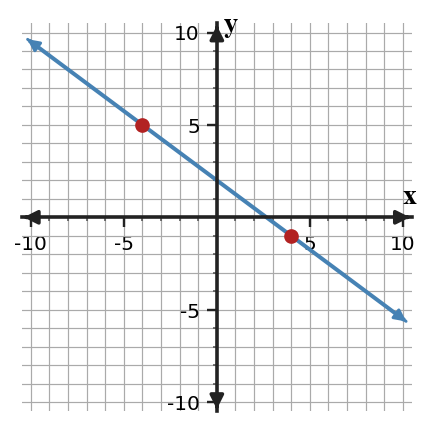
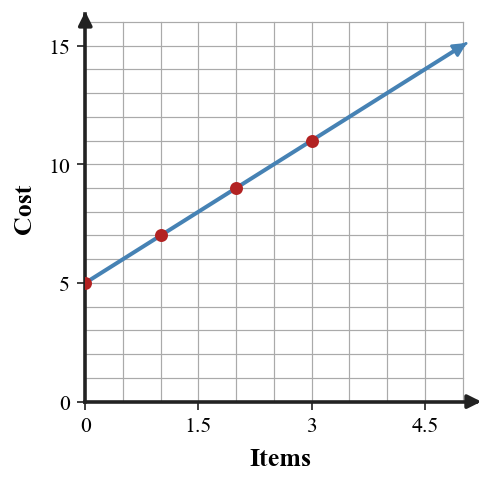
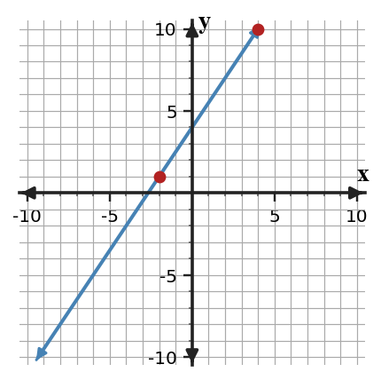

Mathematical idea: Slope is a signed ratio that tells the constant rate of change between two quantities.
Today you will read slope from points, tables, graphs, and situations. You will also decide whether a slope makes sense by checking its sign, size, and units.
Learning Target: Students will interpret slope as a measure of constant rate of change.
I can statements
This is a long-range preview for future lessons. Do not solve it today. Instead, annotate it individually. Circle anything familiar, underline symbols or directions that seem important, and write notes about what information you think will be needed later.
As you annotate, ask yourself: What parts (words, symbols, graphs) do you KNOW? What parts look FAMILIAR? What parts look like jibberish?
Directions
Read the introduction aloud with a partner or in a small group. As you read, annotate the text by highlighting important ideas, circling key vocabulary, and writing short notes about connections, questions, or predictions in the margins.
When a graph shows a relationship, two points can show how the output changes as the input changes. The vertical change is the change in output, and the horizontal change is the change in input. Together they form the slope ratio $\frac{\Delta y}{\Delta x}$.
A slope is more than a number on a graph. A negative slope means the output decreases as the input increases, such as a tank losing water each minute. A positive slope means the output increases as the input increases.
A rate statement is strongest when it fits the situation. If a bike trip has a slope of 12 miles per hour, the words tell what the input and output measure. Without those units, the number 12 does not fully explain the change.
You will see slope triangles on coordinate graphs, tables with equal input intervals, and ratio notation for vertical change over horizontal change. These representations should all tell the same constant-change story when the relationship is linear.
In real situations, slope can describe speed, cost per item, plant growth, or a repeated decrease. A reasonable slope should match the direction of the situation and should not be too large or too small for the context.
Stop and Discuss
To find slope from two points, subtract the $y$-values for vertical change and subtract the matching $x$-values for horizontal change.
$$m=\frac{\Delta y}{\Delta x}=\frac{y_2-y_1}{x_2-x_1}$$| Point | $x$ | $y$ |
|---|---|---|
| $A$ | $-4$ | $5$ |
| $B$ | $4$ | $-1$ |

Context: A slope of $-\frac{3}{4}$ means the output goes down 3 units for every 4 units the input moves right.
On a coordinate plane, a line passes through $A(-3,8)$ and $B(5,2)$.
A line passes through $C(-6,-1)$ and $D(2,5)$.
Stop and Discuss
A constant rate of change means the same amount is added or subtracted every time the input increases by 1.
$$C=2x+5$$| Items | 0 | 1 | 2 | 3 |
|---|---|---|---|---|
| Cost | 5 | 7 | 9 | 11 |

Context: If $x$ is the number of items and $C$ is cost in dollars, the slope 2 means the cost rises by 2 dollars per item.
A trail-mix shop charges \$3.20 per pound.
A parking garage charges \$2.75 per hour.
Stop and Discuss
To decide whether three points lie on the same line, compare slopes from the same starting point.
$$m_{AB}=\frac{10-1}{4-(-2)}=\frac{9}{6}=\frac{3}{2}$$ $$m_{AC}=\frac{16-1}{8-(-2)}=\frac{15}{10}=\frac{3}{2}$$| Point pair | Vertical change | Horizontal change | Slope |
|---|---|---|---|
| $A$ to $B$ | 9 | 6 | $\frac{3}{2}$ |
| $A$ to $C$ | 15 | 10 | $\frac{3}{2}$ |

Context: Matching slopes mean the same rate connects the points, so the constant-change pattern continues.
A line passes through $A(-2,1)$ and $B(4,10)$. A third point is $C(8,16)$.
A line passes through $A(-5,-2)$ and $B(1,7)$. A third point is $C(5,13)$.
Stop and Discuss
Jalen says the slope from $(-6,2)$ to $(3,-4)$ is positive because the $x$-values move to the right.
Student claim: "Moving right means the slope must be positive."
Leah says the slope from $(-2,-5)$ to $(4,-1)$ is negative because the first $y$-value is below zero.
Student claim: "A negative starting $y$-value makes the slope negative."
Stop and Discuss
Slope describes constant rate of change: how much the output changes when the input changes. A strong slope answer includes the sign, the size, and the units when a context is involved.
The key notation is $m=\frac{\Delta y}{\Delta x}$, which means vertical change divided by horizontal change. Tables, graphs, and situations should show the same repeated change if the relationship is linear.
A common error is looking only at whether $x$ increases and forgetting to check whether $y$ increases or decreases.
Strong understanding means you can calculate a slope, explain what it means in a real situation, and decide whether the rate is reasonable.
Look back at the future task. Do not solve it yet. Highlight one part that makes more sense now than it did at the beginning. Circle one part that still feels unfamiliar. Write one sentence about what representation you would look at first.
What is one idea about rate of change and slope you understand better now than at the start of class? Write at least one complete sentence.
What is one thing about rate of change and slope you still want to understand or practice? Be specific — name the idea, not just "everything."